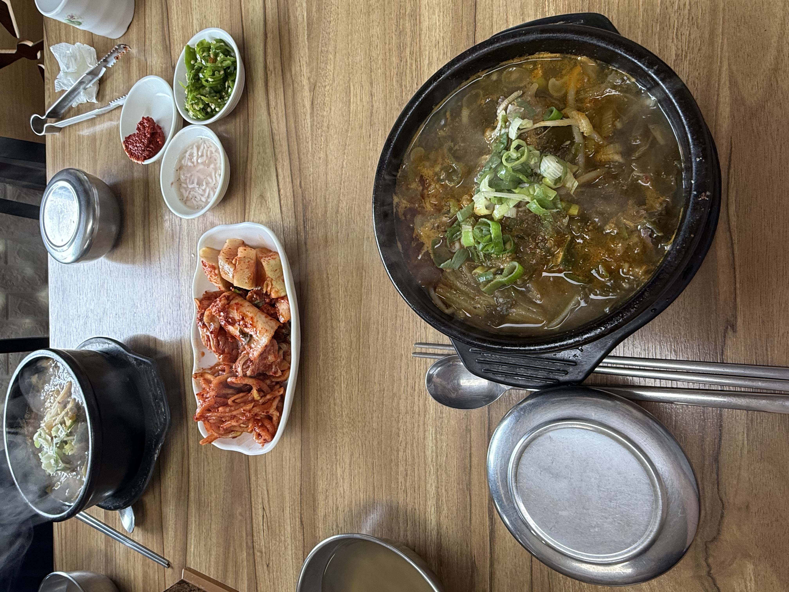

우거지·콩나물·선지가 가득한 강화 새벽해장국의 선지우거지해장국
김포에서 강화대교만 건너면 닿는 강화에, 아침 일찍부터 든든한 한 끼를 챙겨주는 집이 있습니다.
바로 강화 새벽해장국이에요. 이름처럼 새벽 5시부터 문을 여는 노포 해장국집인데, 저는 여기 선지우거지해장국을 제일 좋아합니다. 얼큰 구수한 국물에 강화섬쌀로 지은 밥을 말면 속이 확 풀려요. 직접 담근 김치와 밑반찬까지 알차서, 김포 근처 해장국이 생각날 때 즐겨 찾는 곳입니다.
강화 새벽해장국은 인천 강화군 강화읍 강화대로변에 있습니다.
김포에서 강화대교만 건너면 금방이라 김포에서도 다녀오기 좋은 거리예요. 매일 새벽 5시부터 오후 7시까지 영업해서 이른 아침 해장이나 부지런한 나들이 길에 안성맞춤입니다. 매장 앞 주차도 되고, 정겨운 시골 백반집 분위기라 혼밥·가족 식사 모두 편했어요.
제가 가장 좋아하는 메뉴는 선지우거지해장국입니다.
뚝배기 가득 우거지·콩나물·대파가 들어가고 부드러운 선지가 큼직하게 올라가는데, 국물이 얼큰하면서도 텁텁하지 않고 구수해요. 선지는 비린내 없이 고소하게 씹히고, 한 숟갈이면 속이 확 풀립니다.

담백한 걸 원한다면 순대국도 좋습니다.
순대와 고기가 넉넉하고 부추를 듬뿍 올려 향이 좋아요. 뽀얗고 깔끔한 국물이라 부담 없이 먹기 좋고, 새우젓으로 간을 맞추고 다대기를 풀면 얼큰하게도 즐길 수 있습니다.


이 집을 다시 찾는 이유 중 하나가 밥맛입니다.
강화섬쌀로 지은 밥이라 윤기가 흐르고 찰기가 좋아 국물에 말아도 밥알이 살아 있어요. 해장국집 밥이 이렇게 맛있기 쉽지 않은데, 밥만 먹어도 맛있을 정도입니다.

밑반찬도 정성이 느껴집니다.
직접 담근 배추김치와 깍두기는 적당히 익어 국물과 잘 어울리고, 새콤한 무채나물은 밥에 비벼 먹어도 좋아요. 새우젓·다대기·청양고추로 간과 매운맛을 취향대로 맞출 수 있습니다.


· 얼큰하게 속 풀리는 해장국이 당기는 분
· 김포에서 가까운 강화에서 든든한 아침 한 끼가 필요한 분
· 밥맛까지 좋은 해장국·순대국 집을 찾는 분
참고 — 아침·점심엔 붐빌 수 있고, 선지가 부담스러우면 순대국을 추천해요. 가격·영업시간은 방문 시점 기준이라 달라질 수 있으니 방문 전 전화(032-934-8882)로 확인하세요.